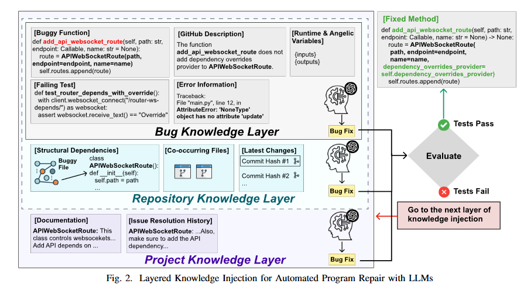

读paper23-arxiv代码修复论文组2
读paper23-arxiv代码修复论文组2
APRMCTS: Improving LLM-based Automated Program Repair with Iterative Tree Search
https://arxiv.org/abs/2507.01827
MCTS
什么是 MCTS？
蒙特卡洛树搜索是一类树搜索算法的统称，简称 MCTS（ Monte Carlo Tree Search）。它是一种用于某些决策过程的启发式搜索算法，且在搜索空间巨大的游戏中会比较有效。那什么叫做搜索空间巨大呢？比如说，在上世纪90年代，IBM公司推出深蓝这个 AI，击败了当时国际象棋的世界冠军，而这个 AI 也比较简单粗暴，把整个国际象棋的搜索空间全部穷举出来，把整个游戏树全部列举出来，那么不管对手下什么，它都知道下一步怎么下可以把他下赢。而对于围棋这种游戏，围棋棋盘是 19*19 的，也就是说有 361 个落子的位置，那么如果我们想把所有围棋的棋局的可能列举出来，一般来说就是 361！，这个数量是比宇宙的原子数量还要多的，就算是世界上最强的超级计算机也无法把所有的可能性穷举出来，那么我们就需要用到类似于蒙特卡洛树搜索这样的稍微智能一点，更可行的办法去对围棋这个游戏可以进行棋盘式的搜索，然后进行决策，最后下赢人类选手。
从全局来看，蒙塔卡洛树搜索的主要目标是：给定一个游戏状态来选择最佳的下一步。
算法过程
算法过程一般有四步：
选择（Selection）：选择能够最大化 UCB 值的结点
其中， 为该节点的平均价值大小； 为常数，通常取2； 为总探索次数； 为当前节点的探索次数。选择 UCB 值最大的子节点进行迭代。
扩展（Node Expansion）：如果当前叶子结点不是终止节点（没有达到终止状态），那么就创建一个或者更多的子节点，选择其中一个进行扩展。
仿真（Simulation）：从扩展节点开始，运行一个模拟的输出，直到博弈游戏结束。比如，从该扩展节点出发，模拟了十次，最终胜利九次，那么该扩展节点的得分就会比较高，反之则比较低。
反向传播（Backpropagation）：使用随机搜索的结果来更新整个搜索树
在完成了反向传播这一步，我们就会持续迭代，回到选择这一步，然后再进行扩展仿真，然后再反向传播，再回到选择扩展仿真，不断地迭代下去，直到算法结束并且给出最终决策。

下面我将对算法的四个步骤做进一步的论述。
1. 选择（selection）
- ：该结点下的平均 Value 大小，比如说，好的一步它的 Value 更大一些，差的一步相对来说要小一些
- ：常数，通常可以取 2，相当于是加号两边式子的一个权重
- ：总探索次数，就是对所有的结点一共 explore 了多少次
- ：当前结点的探索次数
2. 扩展（Node Expansion）
下面通过一个例子来说明。
比如我们从根节点出发，它不是叶子节点，之后计算它的两个子节点的 UCB 值，比如说结点 3 的 UCB 值更大，但是它之前已经被访问过了，根据我们之前的流程图，该节点不会直接进行 ROLLOUT，而是枚举出当前节点所有可能的动作并添加到树中，那么我们枚举出了结点 3 可能有两个动作，所以形成了图(2)，然后接下来我们再看我们要采取哪种动作，这就是 Node Expansion。
3. 仿真（Rollout）
接着上面一步，根据我们的流程图，会将第一个新结点（结点 4）作为当前结点，会对它进行一个 Rollout。
那么这个 rollout 怎么做呢？它会进行一个随机检测，下面用一段伪代码来表示 rollout 过程：
def Rollout(S_i): # S_i：当前状态
loop forever: # 无限循环
if S_i a terimal state: # 如果当前状态是个终止状态，比如说你赢了或者他赢了
return value(S_i) # 返回对 S_i 这个状态的价值，比如说你赢了，这个价值可能就会相对比较高
# 假设还没到终止状态
A_i = random(available_action(S_i)) # 随机选取当前状态下能够采取的一个动作
S_i = simulate(A_i, S_i) # 通过当前状态 S_i 与随机选取的动作 A_i 来计算出下一步的状态并赋值给 S_i
下面我再用图示进行说明。
来看下面这张图，假设我们从黄色节点 1 进行 Rollout，它随机决策到结点 2，然后再随即决策到结点 3，然后在随机决策一直到最后红色结点 7，该节点的状态是 terminal state，然后得到一个 value，然后再将 value 返回给黄色节点 1。

这一步其实也是蒙克卡罗树搜索的非常重要的一关，因为这一步很像是在用随机的方法去逼近整体的一个分布，你想，如果黄色节点 1 代表的是更好的一个动作的话，那么赢的概率就会更大一点。经过很多次的仿真，都会得到一个比较大的概率值，如果它是一个不好的策略，那么经过很多次的仿真，大概率是不会得到一个很好的概率。
4. 反向传播（Backpropagation）
在完成了 Selection，Expansion 和 Rollout 之后，我们再进行 Backpropagation。它是做什么的呢？
在 Rollout 中我们计算出了 value 之后，我们需要返回这个 value，那么对于它所有的父节点（下图黑线上的所有的结点），它们的探索次数全部 +1，它们的 value 也会进行一个累加，然后我们整个算法会 repeate 很多次，直到蒙特卡洛树能够给出当前状态下最好的一个解答，就是我到底应该怎么走。
那么四个步骤到此就结束了，但是之前提到过这个算法会一直进行迭代，那么这个算法到底什么时候结束？
算法何时终结？
一般的方法比如说游戏内棋手的限制时间，比如说，像围棋，国际象棋，在比赛当中每个棋手的时间都是有限制的，但是如果你用电脑肯定就有无限的时间，你可以将其全部穷举出来，但是这样是没有意义的。所以我觉得一个 AI 能够在规定时间内，尤其是时间越少越好，能够在更少的时间内做出更好的决策说明这个机器才更加的智能。如果给你无限的时间来做出一个决策，你可以暴力穷举出所有的可能性，其实就说明这个 AI 没有那么智能。所以一般来说我们会在规定时间范围内终结算法的迭代，然后给出最优的一个解答，下一步应该怎么走，然后再让对面去下棋，对面下完之后，你再进行一个搜索在规定时间内给出一个最优的。
还有一种就是固定迭代的次数。比如说，第一个 AI 迭代了 5000 次得到了一个比较好的结果，另一个 AI 用了 50 次就迭代出了一个比较好的结果，那么就基本认定第二个 AI 相对来说是比较智能的。所以我们也可以给出一个固定的迭代次数，比如说你算到 5000 次迭代就让蒙特卡洛树搜索停下来给出一个决策。
至于怎么给出一个决策呢？很简单，在迭代完成后，选择 value 更大的结点即可完成决策。
Approach
与MCTS近似的四个阶段，即论文中提到的补丁选择、生成、评估、树更新四个阶段。在补丁选择阶段，系统从补丁树中选取一个局部补丁，旨在将其优化为合理的候选补丁。在补丁生成阶段，基于选定的局部补丁生成新补丁，运用思维链推理和自反思技术来提升生成补丁的质量。在补丁评估阶段，通过两种评估策略（LLM-as-Judge和Test-as-Judge）对生成的补丁进行评分。在补丁树更新阶段，更新整个补丁树以反映所有补丁的最新状态。
补丁选择基于UCB的计算。
补丁生成从选定的局部补丁中解析当前缺陷状态，并对存在错误的代码行及测试用例报错信息进行全面分析。基于该分析结果，系统会修改并优化局部补丁，进而生成新的候选补丁。这里有一个问题，这些新生成的补丁可能重复先前探索过的局部补丁错误，也可能陷入新的错误模式，从而更新缺陷的状态，该研究通过COT和Self-Reflection进行缓解。
补丁评估阶段，通过两种评估策略（LLM-as-Judge和Test-as-Judge）对生成的补丁进行评分。
LLM-as-Judge利用LLM在测试覆盖率有限的情况下对生成补丁的质量进行评分。例如，Defects4J 数据集中相当比例的缺陷仅与单个触发失败的测试用例相关。在此类情况下，若仅依赖测试结果作为评判标准，可能产生稀疏的奖励信号，从而降低评估准确性并削弱修复效果。为解决这一问题，APRMCTS 采用 LLM-as-Judge 评估机制，其评判依据不仅包含测试结果，更注重补丁的语义相关性和上下文契合度。评估模型的输入包含：测试用例及其执行结果、存在缺陷的代码、候选补丁、周边代码上下文、思维链的推理过程以及自反思输出结果。
有一个疑问，这里能够给出存在缺陷的代码，相对于进行了缺陷定位，但论文没有提到定位相关的内容。按照overview中给出的例子，应该是用单元测试的报错行定位缺陷代码，但如果存在多个方法嵌套（比如比较极端的
assert(f1(f2(),f3())==0)，该如何定位，还是说将涉及的所有函数都归为缺陷代码）
Test-as-Judge专为具有充分测试用例的错误修复数据集（如ConDefects）设计，奖励值R的计算公式为：通过测试用例的比例，即候选补丁的测试通过率。
补丁树更新除了使用奖励值R在每次生成后即时评估补丁质量外，借鉴蒙特卡洛树搜索（MCTS）的思想，引入Q值来评估补丁在整个搜索过程中的综合质量。Q值的计算不仅取决于补丁自身的质量R，还与其子补丁的质量相关。当生成补丁的奖励值R计算完成后，根据以下公式递归更新其父补丁的Q值。
其中， 为取值0到1的遗忘因子，N表示子节点数量。当 越接近1时，表明Q值的新结果受旧值影响越小。
APRMCTS在每轮迭代中都会经历上述四个阶段，通过搜索和评估新补丁后，基于发现的补丁和评估结果启动下一轮搜索。完成所有搜索迭代后，我们将对记录的可信补丁进行人工验证：若与开发者补丁相匹配或语法等价，则判定为正确补丁；反之则视为错误补丁。
| 评估维度 | 计算依据 | 作用场景 |
|---|---|---|
| 即时评估R | 当前补丁测试结果 | 单次生成的质量反馈 |
| 综合评估Q | 历史+子节点质量 | 全局搜索路径优化 |
参数含义
- ：遗忘因子（0.8）
- ：倾向新观测值（取0.8）
- ：保留历史数据
- ：子节点访问次数（反映探索深度）
- ：子节点Q值（反映子树质量）
- ：遗忘因子（0.8）
更新逻辑
- 递归更新：子节点质量反向传播至父节点
- 动态平衡：
- 分子 体现质量与探索频次的加权
- 分母 实现归一化处理
- 权重分配：新子节点数据占80%权重，历史Q值占20%
1 | graph LR |
一些问题
MCTS存在的一些问题
计算开销大 —— 依赖大量模拟
MCTS 的质量高度依赖模拟次数。
- 每次决策可能需要成千上万次模拟（rollout）。
缓解方法：
- 使用策略网络指导 rollout（如 AlphaGo），替代纯随机，提高单次模拟质量。
- 使用价值网络直接评估叶节点，跳过模拟（AlphaZero）。
随机模拟质量差 —— “垃圾进，垃圾出”
默认的随机 rollout 往往缺乏“大局观”，导致评估不准。
- 在需要长期策略的游戏中（如下围棋），随机走子可能完全忽略关键胜负手，导致错误评估。
缓解方法：
- 用启发式规则或轻量级策略模型代替纯随机 rollout。
- AlphaZero 完全取消 rollout，基于强化学习，用自我对弈训练后的神经网络直接评估。
探索-利用的平衡难调 —— UCT 参数敏感
UCT 公式中的探索参数
c对性能影响大，且没有通用最优值。
c太小 → 过早收敛到局部最优，错过潜在好分支。c太大 → 过度探索垃圾分支，浪费资源。- 不同游戏、不同阶段、不同局面，最优
c可能不同。
缓解方法：
- 自适应调整
c（如基于方差、历史表现）。 - 使用更高级的选择策略（如 PUCT，AlphaZero 用策略网络提供的先验概率指导）。
- 贝叶斯优化或强化学习自动调参。
对“陷阱局面”或“稀疏奖励”问题表现差
MCTS 依赖模拟结果回传奖励，若奖励稀疏或延迟，效果骤降。
- 某些游戏只有终局才有奖励（+1赢/-1输），中间无信号 → MCTS 难以学习长期策略。
缓解方法：
- 引入启发式评估函数（即使不完美）提供中间奖励。
- 使用价值网络预测胜率，不依赖终局（AlphaZero）。
- 奖励塑形（Reward Shaping）人为添加中间奖励。
收敛速度慢 —— 需要大量数据才能“醒悟”
MCTS 是“经验主义”算法，初期可能表现极差，需大量模拟才收敛。
- 在陌生局面中，可能长时间探索无意义分支。
- 不像 Minimax + 评估函数那样“开局就有基本判断力”。
缓解方法：
- 引入先验知识（开局库、模式库）。
- 使用预训练策略/价值网络引导搜索（AlphaZero）。
论文方法的一些问题
问题评估
论文中通过两种评估策略来解决随机模拟与稀疏奖励的问题，即patch质量是可以直接通过测试用例的通过情况和LLM打分进行反应的，这与AlphaZero使用模型进行直接评估类似。
但核心问题在于LLM-as-Judge的评估基准一致性上，举个例子，人类在进行打分时，往往是综合所有选手表现后，以一个统一的基准进行打分，或者是根据后面选手表现，在打分后自适应的修改前面选手的分数。无论如何，关键在于统一的基准。
但对于LLM-as-Judge，相当于每次都是在没有其他选手的参照下对其他选手打分，这是这一方法本质上的局限。
这一问题在大模型训练时就有过类似表现：给一个prompt的一系列response打分，不同的人有不同的基准，会给出基准不一致的分数，但改成给他们排序，则能非常简洁且准确的反应人类偏好。
冗余问题
- 语义等价补丁：不同写法，相同效果（如
x+1vs1+x） - 微小变体补丁：几乎相同，仅格式/注释不同
- 重复失败补丁：相同错误模式反复出现
归根结底，虽然语义是高度近似的，但是由于代码编写等的不同而导致出现冗余，导致MCTS实际上是在同一方案中进行探索。
Bug Fixing with Broader Context: Enhancing LLM-Based Program Repair via Layered Knowledge Injection
https://arxiv.org/abs/2506.24015
核心还是将缺陷相关的信息进行按照相关性分类（分层），逐层注入prompt，相当于一种变相的上下文压缩或者说summary

Repair Ingredients Are All You Need: Improving Large Language Model-Based Program Repair via Repair Ingredients Search
ICSE接收 https://arxiv.org/abs/2506.23100